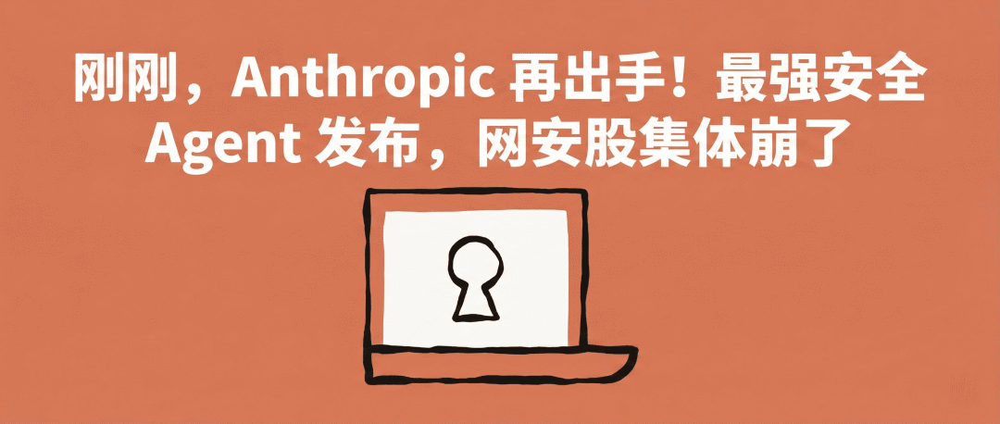

今年 2 月，可能是华尔街有史以来被一家创业公司搅得最不安的一个月。
2 月初，「Claude Cowork」推出法律、金融、销售等行业插件，SaaS 股集体跳水。LegalZoom 跌了 20%，Thomson Reuters 创下史上最大单日跌幅。万亿美元市值，蒸发。
上周，「Claude Code Security」发布，网络安全股全线崩盘。CrowdStrike 两天跌了近 20%。
昨天，Anthropic 发表了一篇关于 COBOL 代码现代化的博客。IBM 单日暴跌 13.2%，310 多亿美元市值没了。25 年来最惨的一天。

今天，Anthropic 又更新了。
IBM 的核心生意之一是卖大型机。全球金融系统、航空公司、政府机构，大量关键业务跑在 IBM 大型机上，用的编程语言叫 COBOL。1958 年诞生，比互联网还老。
懂 COBOL 的人越来越少，但全球 95% 的 ATM 交易底层都是它。企业想迁移到现代语言，需要大量人力和时间梳理业务逻辑。过程极其昂贵，所以大部分公司选择不动。
这就是 IBM 的护城河之一。
Anthropic 昨天说，Claude Code 可以自动完成 COBOL 现代化中最耗时的部分。理解遗留代码、映射依赖、梳理业务流程、识别风险。
遗留代码的现代化停滞多年，因为读懂旧代码比重写还贵。AI 反转了这个成本。

IBM 股价从 257 美元附近直接跌到 223 美元，310 亿美元市值一天蒸发。Bloomberg 数据显示，2 月跌了 27%，1968 年以来最惨。
IBM 回应说自己的 AI 编程助手早就在大型机客户中广泛应用了，Evercore 分析师也说客户早就有迁移选项但就是不走。
但市场不听。市场只看到，AI 正在摧毁那些看似坚不可摧的技术护城河。
这是「Anthropic 效应」。每隔几天发布一篇博客或产品更新，华尔街不同板块轮着跌。
到了今天。

Anthropic 召开企业发布会，正式把 Claude Cowork 从研究预览升级为企业级产品。
2025 年本来应该是 Agent 改变企业的一年，但最后证明大部分都是炒作。失败的原因不在努力，在方法。
今天 Anthropic 给出的方法，是让企业自己建 AI Agent 商店。管理员可以创建私有插件市场，把定制化的 Agent 分发给整个公司。
比如一家投行做一个尽职调查 Agent，一家律所把合规审查封装成插件，全员都能一键调用。
预设插件覆盖了 HR、设计、工程、运营、财务分析、投行、股票研究、私募股权、财富管理。
每一个都是和对应领域的从业者一起设计的，不是套用通用模板。

还有一个很有意思的新能力。Claude 现在可以在 Excel 和 PowerPoint 之间端到端地工作，先在 Excel 里做数据分析，然后直接在 PowerPoint 里生成 PPT。
我们相信未来的工作方式意味着每个人都有自己的定制 Agent。
也许，市场的反应是过度了。
比如，COBOL 迁移远不止翻译代码那么简单。网络安全也不会因为一个代码扫描工具被颠覆，实时威胁检测和扫描漏洞完全是两回事。
但恐慌本身是真实的。
大家真正担心的，是 AI 的进化速度。今天能扫描漏洞，明天能不能自动修？今天能梳理 COBOL 业务逻辑，明天能不能自动迁移？
今天的 Claude Cowork，瞄准的是所有打工人。
我是木易，Top2 + 美国 Top10 CS 硕，现在是 AI 产品经理。
关注「AI信息Gap」，让 AI 成为你的外挂。
